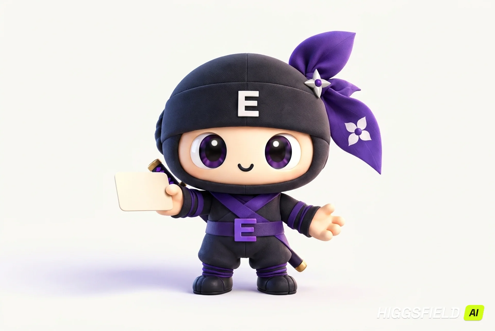
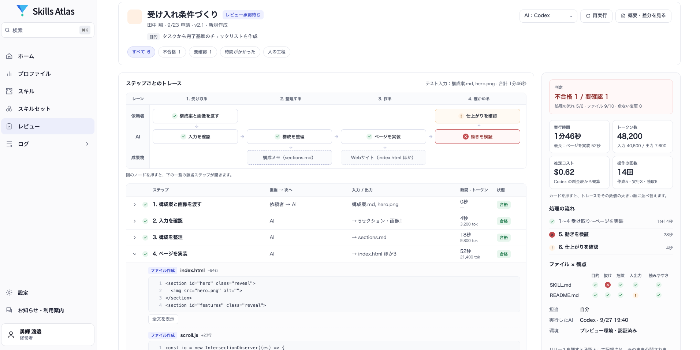

20店舗の小売企業。まずは1店舗で試し、効果を確認してから広げたい。
GOOD WORK DESERVES GOOD COMPANY.
一人の工夫が、
みんなの力になる。
ClaudeやCodexで生まれた、いい仕事の進め方。
見つけて、確かめて、チームで使う。
AIと働く毎日に、知恵がつながる仕組みを。
開発中 · 画面イメージと導入のご相談をご案内

ひとりの工夫この提案の進め方、
次の人にも渡したい。
次の人にも渡したい。
人がレビュー確認するポイントまで、
ひとつのSkillに。
ひとつのSkillに。
✓ 内容を確認して登録
チームの力にいい仕事の型から、
みんなが始められる。
仕事の型を共有する構成イメージみんなが始められる。
ABC次のチームへ →
いつものAIと、その先へ。Claude＋Codex＋Skill Manager
MEET SKILL MANAGER
いい仕事には、
引き継げる「型」がある。
何を調べるか。どんな順番で進めるか。
どこで、人が確かめるか。
その手順と判断基準をまとめたものが、Skillです。
Skill Managerは、一人ひとりのSkillsを
探す・承認する・配る・改善するための管理基盤です。
「あの人に聞かないとわからない」を、
「この型から始めてみよう」へ。
A BETTER DAY AT WORK
いつもの仕事に、
次の人への贈りもの。
残すのは、できあがった資料だけではありません。
いい仕事にたどり着くまでの、進め方です。
想定活用例提案がうまい人の、
提案がうまい人の、
「考える順番」をチームへ。
顧客の条件を整理し、構成をつくり、根拠を確認する。その進め方があれば、次の担当者も、白紙から悩まずに始められます。
いままで
提案書は共有した。でも、つくり方は本人しか知らない。
目指す状態
構成・判断基準・確認点を、承認したSkillとして引き継ぐ。
EXAMPLE WORKSPACE● ● ●
最初に渡すもの
顧客の条件 ＋ 参照してよい資料
↓
提案の構成案
課題から、
次の一手まで。
- 顧客の課題と目指す状態
- 提案の構成と、その根拠
- 実施ステップと確認事項
✳ 人が確かめる
数値の出典・顧客条件との一致・未確認事項
説明用の架空の業務例です。導入実績ではありません。
例えば、こんな工夫を残す
「良い提案」だけでなく、
良くした理由まで。
営業提案の架空例 · 出力内容や成果を保証するものではありません。
「全20店舗へ一括導入し、運用を統一します。」
一括導入は、顧客の条件と不一致。
「1店舗で試行し、現場の確認後に展開範囲を決めます。」次の担当者へ残すSkillに、「提案前に、顧客が望む導入範囲を照合する」という確認点を加える。経験を、再利用できる判断基準にします。
LESS GUESSWORK. MORE CLARITY.
仕組みが見えると、
チームで使える。
探すところから、実行結果の確認まで。
画面を切り替えて、運用のつながりを見てください。
SKILL MANAGER / スキルマップ開発中の画面イメージ
知恵を、つながりごと見渡す。
分野・前提・関連をたどって、使いたいSkillを見つける設計です。
BEYOND A SHARED FILE
結果の先にある、
工程までたどれる。
「要確認」はどの工程か。何のファイルが変わったか。どんな判定が残っているか。実行トレースから、人が確かめる場所を探す設計です。
開発中の画面イメージ。表示項目・提供範囲は変更される場合があります。

判定・変更ファイル・工程を拡大して見る ↗画面内の名称は変更される場合があります。実機デモで確認できる機能・提供時期は個別にご案内します。
HUMAN JUDGMENT, BUILT IN.
任せるところも。
確かめるところも。
自分たちで決められる。
配る前に、人が承認。
下書きからレビュー、公開へ。チームが使う仕事の型を、確認した版にそろえる構想です。
下書き → レビュー → 公開
結果から、工程へ。
何を受け取り、どこで処理し、何が要確認だったか。判断のための情報を工程単位で追います。
01 入力02 AI処理03 人が確認 ◉
広げた後も、管理。
閲覧・編集・公開の権限、接続先、配布する版を管理。問題があれば前の版へ戻す判断につなげます。
v1.2承認した版を配布
承認済み版の配布・同期、権限設定、切り戻しは開発構想です。Claude／Codex側の権限設定と組み合わせて運用します。
大切にしていること
蓄積するのは、人が確認した仕事の型。
使うだけでAIが自動学習する仕組みではありません。
SMALL STARTS, SHARED PROGRESS.
まずは、一つの仕事と
小さなチームから。
今あるClaude・Codexの活用を出発点に。
現場と管理者で、一周まわして確かめます。
- 01
仕事を選ぶ
対象業務と最初のSkillsを決める。
- 02
ルールを決める
利用者・承認者・接続先を整理する。
- 03
試して、確かめる
確認時間や差し戻し理由を記録する。
- 04
次のチームへ
効果を見て、展開する範囲を決める。
資料記載の予定価格
10,000円 / 月・アカウント
管理者・利用者ともにアカウントが必要です。
価格・提供条件は確定前です。税区分・最低契約数・導入支援費は個別にご案内します。
A FEW THINGS TO KNOW
検討の前に。
ClaudeやCodexを入れ替える必要はありますか？
既存のAI活用と組み合わせ、Skillsの作成・承認・配布・運用を支える構想です。ご利用中の環境を伺い、対応範囲をご案内します。AIサービスの契約費用が含まれるとは限りません。
ファイルを共有するだけとは、何が違いますか？
共有後の運用までつなげる設計です。Skill同士の関係、工程、人の承認、配布対象の版、実行結果を確認し、チームが使い続けられる状態を目指します。
デモでは何を確認できますか？
現在開発中です。画面や機能のうち確認できる範囲と、業務への適合、提供時期・導入条件をご案内します。構想にあるすべての機能が利用可能とは限りません。